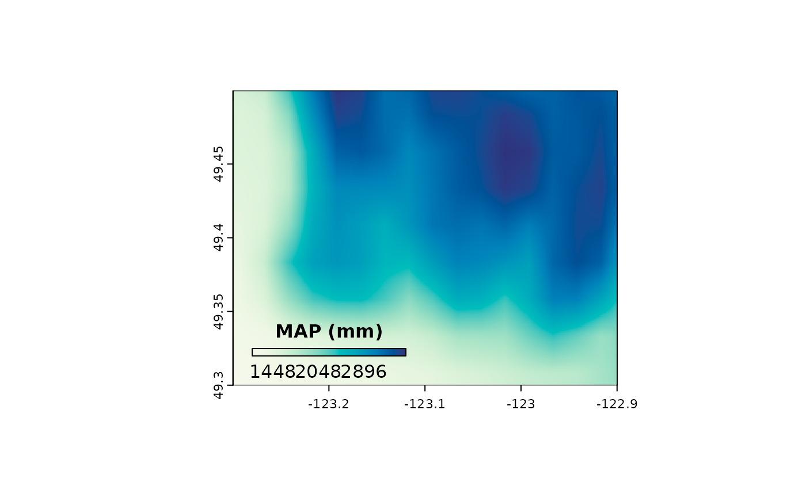

Legend for color ramp maps
legend_ramp.RdThis function plots a map legend that handles logarithmic scaling
Usage
legend_ramp(
r,
title,
ColScheme,
breaks,
pos = c(0.2, 0.23, 0.1, 0.5),
log = NULL,
log.relative = FALSE,
horizontal = FALSE,
title.height = 1
)Arguments
- r
A spatial raster object, typically from the
terrapackage.- title
Character. The title for the legend.
- ColScheme
Character vector. Specifies the colors used for the legend. Typically corresponds to the color scheme applied to the raster data visualization.
- breaks
Numeric vector. Defines the breakpoints for the legend, determining how the range of the raster is divided into intervals corresponding to the colors in
ColScheme.- pos
Numeric vector of length 4. Defines the position of the legend as proportions of the raster extent. The format is
c(xmin, xmax, ymin, ymax).- log
Numeric or NULL. The base of the logarithm used to compute legend labels. If
NULL, values are displayed as-is.- log.relative
logical. If TRUE, legend labels represent a percent difference.
- horizontal
Logical. Should the legend be drawn horizontally? Default is
FALSE.- title.height
Numeric. Scaling factor for the height of the legend title relative to the legend size.
Value
NULL. A plot of the legend is drawn in the current plotting device. The function does not return any value.
Details
The function uses the extent of the raster object to determine the positioning and size of
the legend. The legend can be oriented either horizontally or vertically, and logarithmic
scaling is applied to the labels if the log parameter is specified.
Examples
## get the sample digital elevation model (dem) provided with `climr`
dem <- get(data("dem_vancouver")) |> terra::unwrap()
## A simple climr query.
## This will return the observed 1961-1990 normals for the raster grid points.
var <- "MAP"
clim <- downscale(dem, which_refmap = "refmap_climr", vars = var)
#> Welcome to climr!
#> Not fully cached :( Will download more
#> Downloading new data from refmap_climr...
#> .
#> Caching data...
#> Downscaling...
#> Climate vars...
#> Appending... [MAP]
## log-transform precipitation for more meaningful scaling
clim <- log2(clim)
## increment for the ramp
inc=diff(range(terra::values(clim)))/500
## color breaks
breaks=seq(min(terra::values(clim))-inc, max(terra::values(clim))+inc, inc)
## color scheme
ColScheme <- rev(hcl.colors(length(breaks)-1, "GnBu"))
terra::plot(clim, col=ColScheme, breaks=breaks, legend=FALSE, main="", mar=NA)
legend_ramp(
clim,
title = paste(var, "(mm)"),
ColScheme = ColScheme,
breaks = breaks,
pos=c(0.05, 0.45, 0.1, 0.125),
log = 2,
horizontal = TRUE
)
